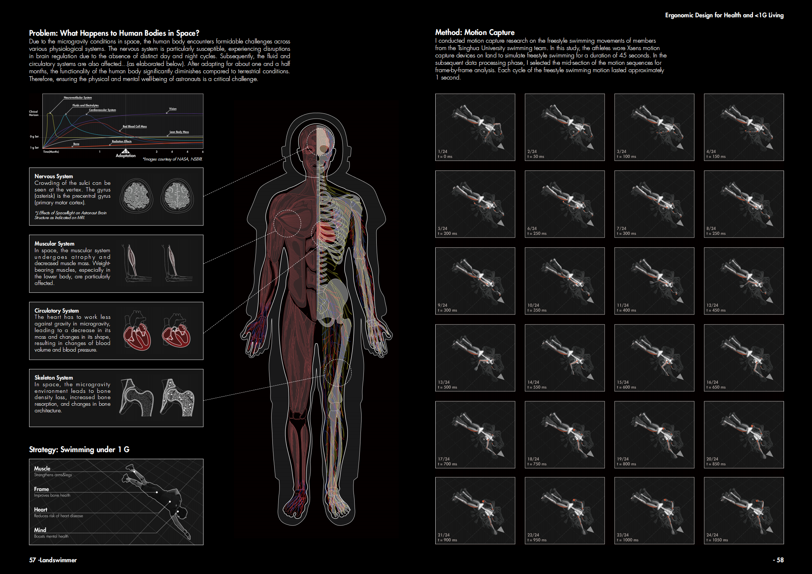
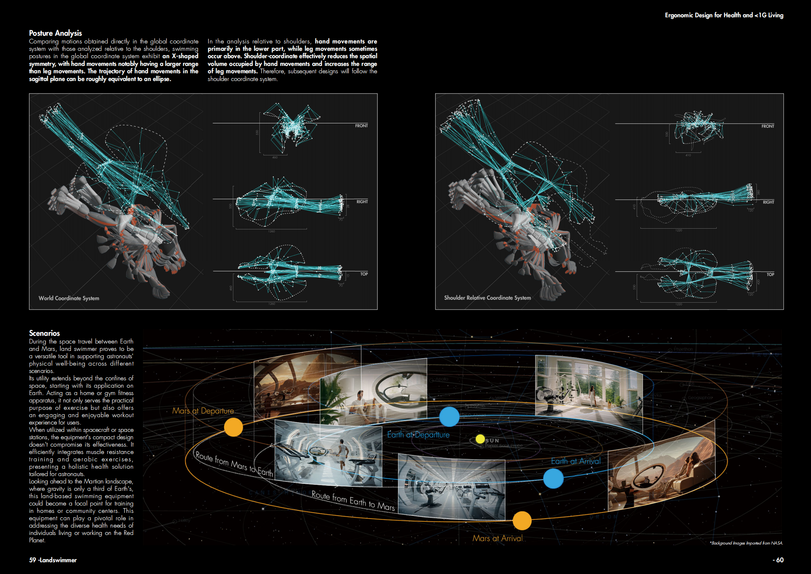
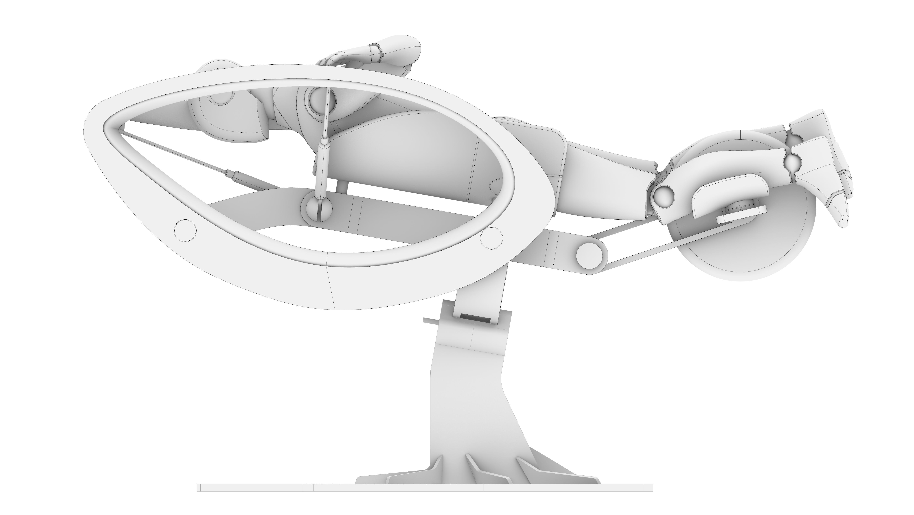

Land Swimmer (Patented)
-
The project is based on the Mars Habitat initiative led by Professor Xu Weiguo, Dean of the Shenzhen Institute of Future Human Habitats at the School of Architecture, Tsinghua University. The initial requirement was to design adaptive furniture for astronauts living in outer space.
1.Under 1G Health
A gravity environment of less than 1G poses challenges to human skeletal, muscular, cardiovascular, and fluid systems, making it crucial to find ways to maintain health. According to NASA's current exercise practices commonly performed on lunar bases and spacecraft, swimming is an activity that effectively coordinates upper and lower limbs while strengthening the spine. Therefore, this project focuses on the design of an outer space swimming trainer and explores its application throughout the journey from Earth to Mars.
2.Swimming Posture Analysis
This project utilized the XSENS MVN Awinda motion capture system to record movements of members from the Tsinghua University swim team. The captured motion trajectories were transformed into coordinate systems centered on the head and shoulders for analysis. It was observed that the trajectory space was more compact when using the shoulder as the coordinate center. Consequently, the trajectory's center was set at the shoulder.
3.1:50 3D Printed Model Making
To achieve coordination between the upper and lower limbs, I designed the structure and form of the overall motion device by referencing bicycles and existing elliptical trainers. A 1:50 scale model was then 3D printed to visualize the design.
-
Design Type: Industrial Design, Product Design, Ergonomic Design, Computational Design
Project Type: Professor Xu Weiguo's research team project
Time: 2023.3-2023.4
Instructor: Prof.XU Weiguo, Dean of School of Future Human Habitat Tsinghua SIGS
Collaborator: Individual Work
Main Contributions:
1.Captured the swimming postures of two members of the Tsinghua University swim team using an inertial motion capture system, followed by data cleaning and analysis;
2.Designed the mechanical trajectory of the motion device based on the results of posture capture;
3.3D printed the prototype of the motion device at a 1:50 scale and applied a finishing spray.
Patent: Junxiao, L. (2023). Training Equipment of Swimming on Dry-land (Cn. 202330543092.8). China National Intellectual Property Administration.


